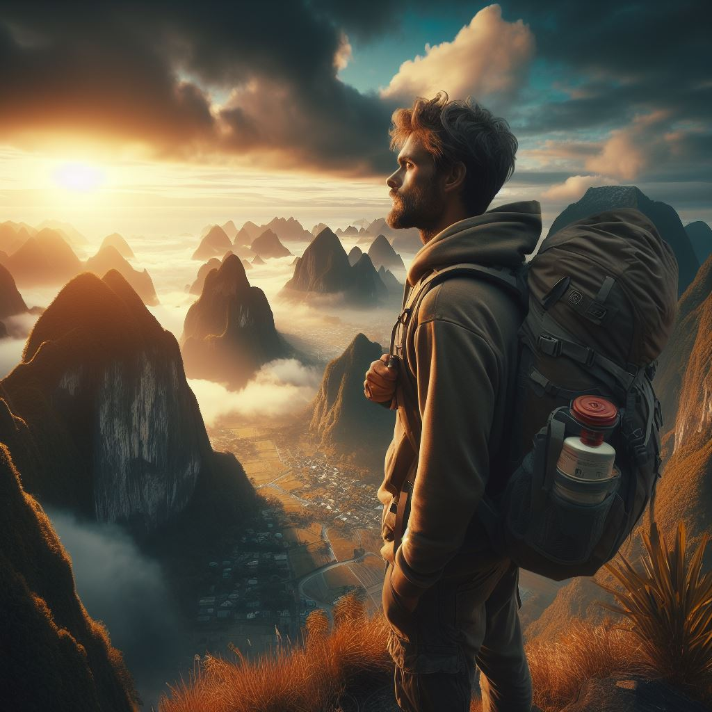

Exploring Asia's Urban Centers
In the quiet suburb where 21-year-old Mark had spent his entire life, a sense of restlessness had begun to stir within him. The familiar streets and faces no longer held the allure they once did. It was time for a change, a leap into the unknown. With a backpack slung over his shoulder and a map of Asia in hand, Mark stood at the threshold of a grand adventure. The decision to embark on a backpacking journey through Asia had not come lightly. It was a dream he had nurtured for years, a yearning to explore the far corners of the world and discover the wonders that lay beyond his comfort zone. With a mixture of excitement and nervous anticipation, Mark bid farewell to his family and friends, promising to return with tales of his exploits and adventures. As he stepped onto the plane bound for his first destination, the sprawling city of Hong Kong, he felt a surge of adrenaline course through his veins. Arriving in Hong Kong, Mark was immediately enveloped in the hustle and bustle of the city, where towering skyscrapers reached for the sky and the aroma of street food wafted through the air. With wide eyes and a sense of wonder, he navigated through the maze of streets, eager to immerse himself in the vibrant culture and rich history of the city. From Hong Kong, Mark's journey took him to the ancient city of Kyoto, where he found himself wandering through serene bamboo groves and tranquil temple gardens. In the shadow of towering pagodas, he marveled at the beauty of traditional tea ceremonies and the graceful movements of kimono-clad geishas. But it was amidst the mist-shrouded peaks of the Himalayas that Mark truly found himself tested. Trekking through rugged terrain and braving icy winds, he pushed his body to its limits in pursuit of the breathtaking vistas that awaited him at the summit. As he stood atop the world, gazing out at the endless expanse of snow-capped peaks stretching out before him, Mark felt a sense of awe wash over him. In that moment, he realized that the true beauty of his journey lay not in the destinations he visited, but in the experiences he shared and the lessons he learned along the way. And so, with each passing day and each new destination, Mark's backpack grew heavier with memories and mementos collected from the far corners of the earth. But his spirit remained light, fueled by the boundless sense of adventure that had led him to embark on this epic journey in the first place. And as he continued to traverse the winding roads of Asia, he knew that the greatest adventure of all was still yet to come. From the serene temples of Kyoto to the bustling streets of Mumbai, Mark's journey took him on a whirlwind tour of Asia's diverse landscapes and cultures. Along the way, he found himself drawn into the rhythm of life in each new place, forging connections with fellow travelers and locals alike. In the vibrant markets of Bangkok, he bartered with street vendors for trinkets and treasures to commemorate his journey. In the tranquil rice paddies of Bali, he found solace in the simplicity of rural life, trading stories and laughter with farmers tending to their crops. But amidst the excitement and adventure, Mark also encountered moments of doubt and uncertainty. Far from home and the familiar comforts of his suburban life, he grappled with feelings of loneliness and homesickness. Yet, with each passing obstacle, he discovered an inner resilience he never knew he possessed, pushing himself to embrace the challenges that lay ahead. As the days turned into weeks and the weeks into months, Mark's backpack grew heavy with souvenirs and memories of his travels. Yet, with each passing mile, he found himself growing lighter, shedding the burdens of his past and embracing the boundless possibilities of the future. And so, with a heart full of gratitude and a spirit renewed, Mark continued to journey through the vast expanse of Asia, knowing that the greatest adventure of all was still yet to come. As Mark's journey through Asia unfolded, he found himself continually amazed by the beauty and diversity of the continent. From the tranquil backwaters of Kerala to the bustling streets of Tokyo, each new destination offered him a glimpse into a world vastly different from his own. In the ancient city of Petra, nestled amidst the red-rock cliffs of Jordan, Mark marveled at the intricate carvings and towering architecture of the Nabatean civilization. As he traced his fingers along the weathered stone walls, he couldn't help but feel a sense of awe at the enduring legacy of those who had come before him. From Petra, Mark's journey led him to the windswept deserts of Mongolia, where he found himself riding horseback across the vast expanses of the Gobi. With the sun beating down upon his back and the wind whipping through his hair, he felt a sense of freedom unlike anything he had ever experienced before. But it was amidst the ancient ruins of Angkor Wat that Mark truly felt the weight of history bearing down upon him. As he stood amidst the crumbling temples and moss-covered stones, he couldn't help but marvel at the ingenuity and craftsmanship of the Khmer people who had built them centuries ago. As the days stretched into weeks and the weeks into months, Mark found himself inexorably drawn deeper into the heart of Asia. From the snow-capped peaks of the Himalayas to the emerald waters of Halong Bay, he wandered through a landscape that seemed to stretch on for eternity. Yet, for all the wonders he encountered along the way, Mark couldn't shake the feeling that something was missing. Despite the breathtaking vistas and awe-inspiring monuments, there was a longing deep within him that remained unfulfilled. It wasn't until he found himself standing on the shores of the Ganges, watching as the sun dipped below the horizon in a blaze of fiery hues, that Mark finally understood what he had been searching for all along. It wasn't the places themselves that held the key to his happiness, but the people he had met and the connections he had forged along the way. And so, with a newfound sense of purpose and a heart full of gratitude, Mark continued to journey through the vast expanse of Asia, knowing that the greatest adventure of all was still yet to come. As Mark's travels took him deeper into the heart of Asia, he found himself drawn into the stories of the people he met along the way. In the bustling markets of Delhi, he shared chai with street vendors who regaled him with tales of their lives and dreams. In the remote villages of Nepal, he listened to the wisdom of elders who spoke of a time before the world had been touched by modernity. With each passing day, Mark's perspective on life began to shift. No longer content to simply be a passive observer, he threw himself wholeheartedly into the experiences that came his way, eager to embrace every opportunity for growth and connection. In the ancient city of Varanasi, where the Ganges flowed like a ribbon of liquid gold, Mark found himself swept up in the fervor of religious devotion. Standing on the ghats at dawn, he watched as devotees performed their morning rituals, offering prayers and flowers to the river that had sustained their ancestors for generations. It was amidst the chaos and beauty of Varanasi that Mark met Priya, a young woman with a smile that could light up the darkest night. Drawn to her warmth and vitality, he found himself captivated by her stories of life in the city, of dreams pursued and obstacles overcome. Together, they explored the narrow alleyways and hidden temples of Varanasi, their laughter mingling with the sound of bells and chants that echoed through the ancient streets. With Priya by his side, Mark felt a sense of belonging he had never known before, as if he had finally found a piece of himself that had been missing all along. But as their time together drew to a close, Mark couldn't shake the feeling of sadness that settled over him like a shroud. Though he knew that their paths would inevitably diverge, he couldn't bear the thought of saying goodbye to the woman who had come to mean so much to him in such a short time. And so, with a heavy heart and a promise to return one day, Mark bid farewell to Priya and the city of Varanasi, knowing that their brief encounter had changed him in ways he could never fully articulate. As he journeyed on, through the bustling streets of Kolkata and the tranquil tea plantations of Darjeeling, Mark carried with him the memories of his time in Varanasi, a reminder of the power of connection and the beauty of human kindness. And though his path was still uncertain, and the road ahead stretched on into the unknown, Mark walked with a newfound sense of purpose and determination, knowing that wherever his travels took him next, he would carry the spirit of Asia with him always.